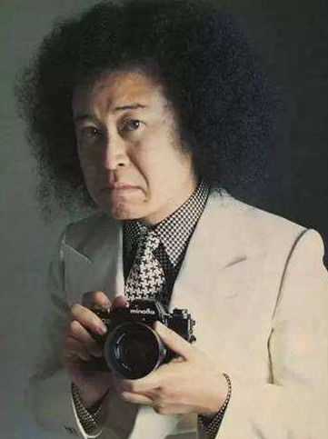

|
筱山纪信
筱山纪信（Shinoyama Kishin），日本知名摄影家，是日本少数的与平面传播媒介紧密合作的高产摄影家之一，已经出版有各种摄影书籍与作品集上百册，包括在日本社会各个阶层引起巨大反响的《晴天》及《圣塔菲·宫泽理惠》等。 筱山纪信于1940年出生于东京新宿，筱山纪信1958年毕业于日本大学摄影系。在大学学习摄影期间，他就已经是一个为摄影界关注的富于创意的年轻摄影家。筱山于1966年获得日本摄影评论家协会新人奖。1976年，他在威尼斯双年展上举办了个展《家》。1981年，他出版了《筱山纪信──丝绸之路》8卷本摄影集。1987年，巴黎的蓬皮杜艺术中心举办了《筱山宽幅东京》展。1991年，他在东京举办个展《新宿》。 |
 |